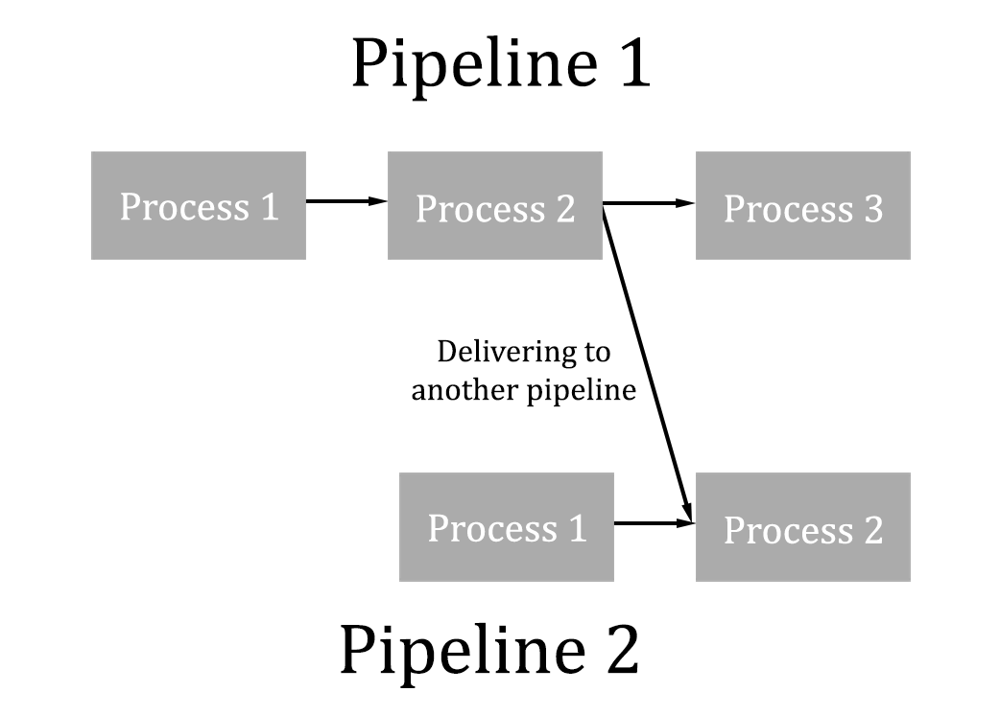

|  |
TACTIC's digital asset management features now include the ability to deliver checkins to another process. This provides additional flexibility for what happens to an asset once it has gone through a certain process. This feature is currently only configurable by editing a pipeline's XML definition. A 'to_expression' attribute has been added to allow this.
In the example below, a pipeline which has the single process 'animation' is set up to deliver to any sObject of the sType 'game/asset'.
<pipeline> <process name="Animation" task_pipeline="game/Animation"/> <connect from="Animation" to="output" to_expression="@SOBJECT(game/asset)])"/> </pipeline>
The result of this is that any sObjects of sType 'game/asset' will now show as an option to 'deliver to' in the check-in widget UI. In this example, an asset called 'test' is being delivered to, this delivery being the final output of the animation process.
 |